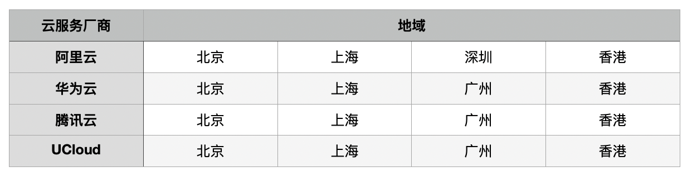
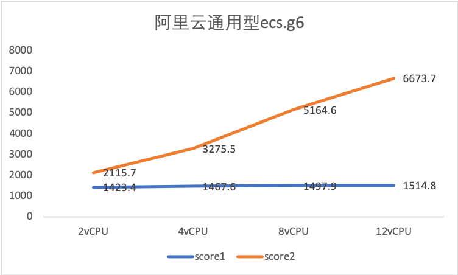
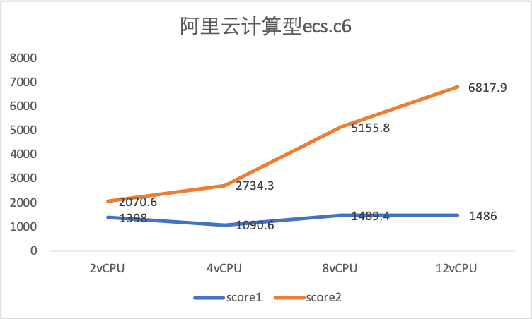
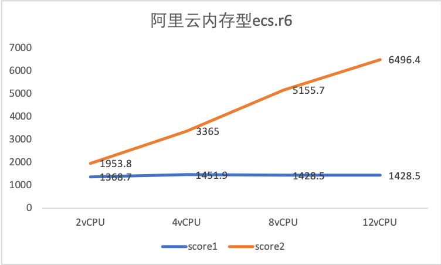
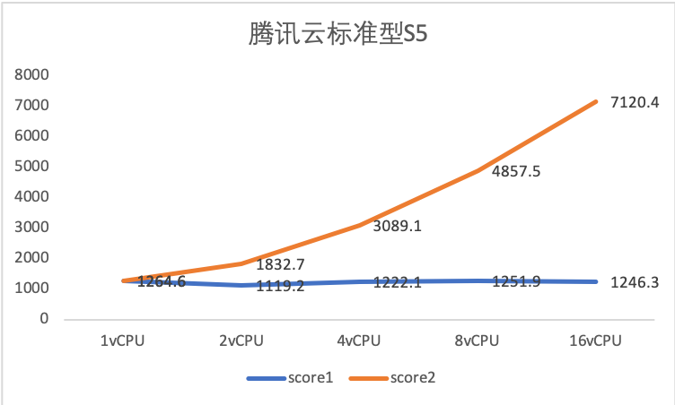
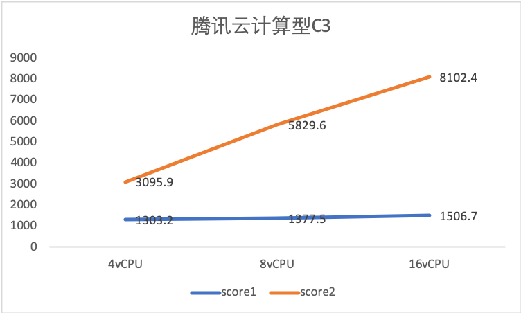
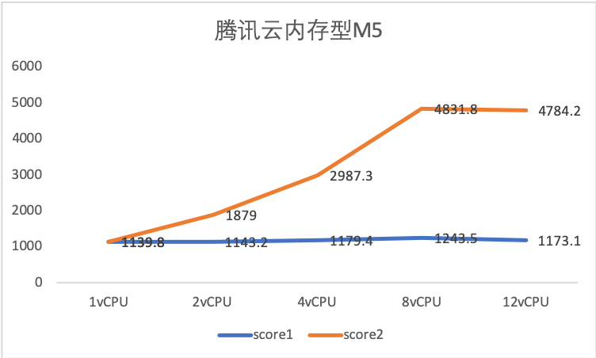
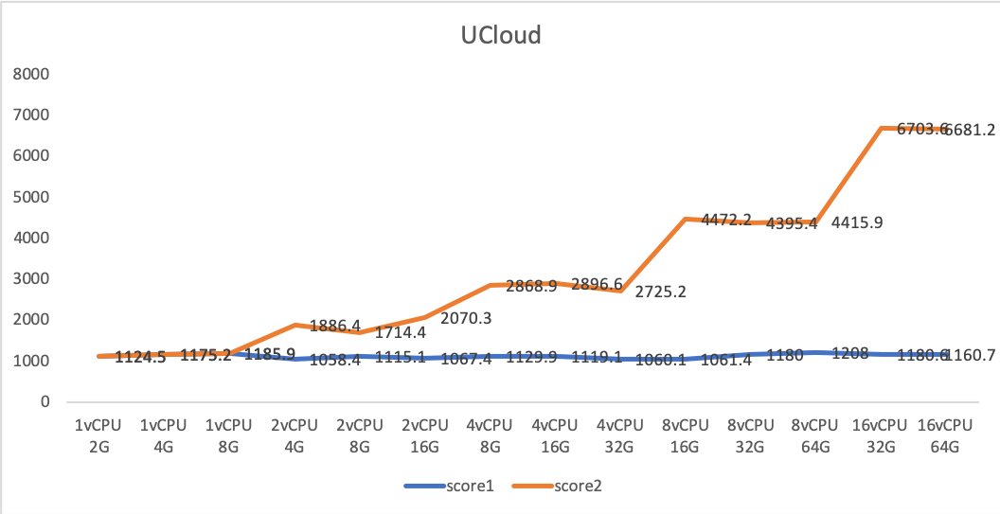

评分规则
我们对阿里云、腾讯云、UCloud按量付费的实例进行评测，得到评分结果，以此为依据进行推荐。
由于实例类型种类繁多，我们选取了有代表性的3种类型，9种实例进行持续的评测，将这几种实例的评测结果推广到其他实例上，得到其他实例的评分。
评测每周进行一次，每次评测选择不同的地域，在四个不同地域中进行评测。如下图：
评测结果见云服务评分页面。
评测实例选取
对于阿里云和腾讯云，我们在常用的通用型/标准型，计算优化型和内存优化型三种类型种各选择一种；对于UCloud，选择相同vCPU和内存的实例。最新一次评测实例选取如下：

通用型/标准型的vCPU内存比为1:4，计算优化型为1:2，内存优化型为1:8。每次评测选择同一类型中不同配置大小的实例，但在一次评测中，三个云厂商的评测类型vCPU和内存对应相同，以便在不同厂商间进行对比。
评测指标和评分计算
目前，我们选择了五个维度的评测指标来衡量一个实例的性能，并分别进行评分。分别是CPU性能、内存性能、磁盘性能、网络性能和启动时间。对于每一个指标，设定一个基准性能参数，评测实例的分数就是该实例的评测结果与设定的基准性能参数的比值。基准性能参数的设置使得分数在100分左右。
总评分即是各个指标评分的加和。
评测程序
我们使用sysbench评测实例的CPU、内存和磁盘性能，使用netperf评测实例的网络性能。可前往云服务评测页面了解具体情况。
评分推广
我们在通用型、计算型、内存型三种类型的所有按量付费实例上使用Unixbench进行评测，通过评测结果探索在同一类型中实例性能与配置大小的关系。
经过实验，我们发现，在同一类型中，实例性能与配置大小呈线性关系，即实例性能会随着配置增大而增强，只是线性关系的斜率系数不同。
实验结果具体如下面几幅图所示，score1为单进程的得分，用来衡量单个CPU的性能，score2为根据CPU数目的多进程的得分，用来衡量整体的CPU性能（横坐标表示实例配置，纵坐标为unixbench的分数）：
  上面三幅图分别是阿里云通用型、计算型和内存型的评测结果，线性关系很明显。
  上面三幅图分别是腾讯云标准型、计算型和内存型的评测结果，腾讯云实例性能和配置大小的关系虽然不是较为完美的线性，可以发现当CPU数或内存较大时，性能的增加会有所下降，但是在配置较小时，线性关系是成立的。
由于UCloud并没有区分类型，所以就按照与阿里云、腾讯云相同的vCPU内存比例来选取相应实例进行评测，得分随vCPU增加呈线性提升。
由此可以很清楚的发现实例性能和配置大小间的线性关系。前面提到每次评测在常用的通用型/标准型，计算优化型和内存优化型三种类型种各选择一种。至于这些类型中的其他实例的评分，是通过线性推广而来。
至于这3中类型中的其他实例，因为我们只关注按量付费的情况，所以就不予评测。至于其他类型，由于各种原因，暂时不进行评测。